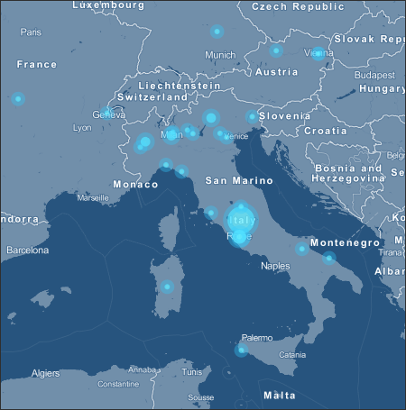
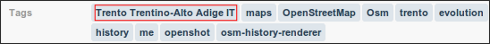

Introduzione
Anni fa ho creato un aggregatore di feed RSS, con l’obiettivo di raccogliere le notizie provenienti dai blog italiani a tema GIS. L’ho fatto come “utilizzatore finale” (giuro che non è satira politica), per avere una fonte unica – e in particolare un solo feed RSS – da cui leggere notizie a tema. Gli associai anche un nome di fantasia: Blog GIS Italia.
Successivamente, quando TANTO era ancora un blog monoautore, l’ho inserito nel flusso di notizie di una delle colonne laterali del blog, e nel tempo ne ho curato (malamente) la manutenzione, l’aggiornamento del “motore” e quello delle fonti.
La sua ultima versione – che con un tocco di presunzione avevo classificato come “0.3” – era basata su Yahoo! Pipes e ne sfruttava pochissime funzioni (soltanto un po’ di regex sul titolo delle sorgenti degli RSS).
E’ uno strumento che mi è sempre stato utile, su cui desideravo investire un po’ di nuove risorse e dare finalmente vita alla versione “0.4”. Il momento è arrivato e nasce oggi, come progetto della redazione di TANTO, “Planet GIS Italia 0.4” (ebbene sì un nome un po’ diverso).
Planet GIS Italia 0.4
E’ una finestra sul mondo delle tecnologie e della cultura geospaziali, un punto di accesso e di scoperta centralizzato. Nulla di nuovo.
Esistono infatti già diversi aggregatori legati al mondo dei GIS. Tre esempi noti:
- Planet OSGeo, is a window into the world, work and lives of OSGeo members, hackers and contributors;
- Planet Geospatial, is a window into the world of geospatial technology;
- geoblogger.eu, is a feed aggregator of European geo-blogs and should serve as index and leverage networking for geo-minded people in that region.
Il nome è cambiato perché sono cambiati i criteri di selezione: ci sembrava riduttivo quello di aggregare “soltanto” le notizie/post/articoli provenienti dal mondo dei blog. Sono la fonte principale, ma non sono l’unica, né sempre la più ricca.
Ogni aggregatore sottostà a dei criteri di selezione, e quello principale di Planet GIS Italia (da qui in poi PGI) è “spaziale”: i contributi raccolti vengono dal nostro Paese (non sempre in senso stretto). Un altro criterio è ovviamente quello tematico.
Il risultato è un sito snello, un piccolo “televideo” tematico, che per scelta editoriale non ingloba interamente i post originali, ma soltanto una piccola parte.
Una piccola/grande novità di questo aggregatore, che lo differenzia ad esempio dai tre famosi di cui sopra, è il suo essere “geografico” non soltanto per i temi trattati, ma anche nel suo “cuore”. Infatti sugli elementi dei feed RSS sorgenti viene eseguita una procedura di geoparsing, con l’obiettivo di estrarre le informazioni spaziali eventualmente presenti in essi. Si tratta essenzialmente di una “caccia al
toponimo” che (se va a buon fine) consente di arricchire il dato originale con un’informazione che inizialmente (quasi sempre) non era presente: la posizione sulla Terra.
Uno degli output è ovviamente una mappa, in cui vengono raccolti – ed eventualmente aggregati in cluster – gli elementi archiviati in PGI.

Non crediamo però che l’elemento geografico sia il più importante. Ci piace infatti pensare che questo spazio possa essere soprattutto una fonte di scoperta e un ponte tra persone, esperienze e professionalità. Nel lavoro di redazione, nel raccogliere e proporre gli elementi da aggregare qui, noi stessi abbiamo letto per la prima volta dell’esistenza di alcuni siti, abbiamo appreso nuovi concetti e siamo entrati in contatto con delle belle persone.
Come funziona Planet GIS Italia
Planet GIS Italia è basato su MANAGING NEWS, un motore open source per l’aggregazione di notizie con le seguenti caratteristiche di base:
- Aggrega da sorgenti RSS/Atom a scelta
- Mostra le notizie come lista o su una mappa
- Consente di eseguire delle ricerche
- Da la possibilità di raggruppare le notizie in canali
- Esegue il geotagging delle notizie
- Espone i contenuti raccolti via RSS (e GeoRSS)
- Consente di condividere i contenuti su Facebook, Twitter o per email
Managing News è un prodotto (da febbraio del 2011) di Phase2 Technology, basato a sua volta su una personalizzazione di alto livello di Drupal 6, con alle spalle moduli che ci piacciono tanto, tra i quali OpenLayers. Il gruppo che ha originariamente sviluppato il prodotto è quello (fantastico) di Development Seed (per inciso una delle più belle homepage di tutti i tempi), e se ne ha evidenza nell’uso di MapBox come layer di base dell’interfaccia cartografica.
Il servizio di geoparsing è basato su Yahoo! Placemaker, un servizio che consente di sviluppare applicazioni location-aware, identificando i luoghi presenti in contenuti non strutturati (feed, pagine web, news, aggiornamenti di stato, ecc.) e restituendo i metadati geografici correlati.
Ad ogni luogo individuato viene associato un identificatore univoco WOEID (Where On Earth Identifiers), un tipo (una categorizzazione di base, per definire ad esempio se il luogo è una città o uno stato), un nome “formale” ed una coppia di coordinate.
Immaginiamo ad esempio che su su Planet GIS Italia venga raccolto il seguente contributo:
“Opendata, donazioni, Baviera: conti e racconti”
Il motore di PGI lo invia a Yahoo! Placemaker che lo processa e gli restituisce (se viene individuato un luogo) queste informazioni:
- woeId : 2345482 → gli associa un ID
- type : State → lo classifica
- name : Bavaria, DE → gli associa un nome formale
- centroid → ne restituisce la posizione del centroide
- latitude : 48.9172
- longitude : 11.408
Questo è l’output completo che viene restituito. Se volete “giocarci” un po’, lo strumento più comodo e didattico è sicuramente la console YQL. Da questo link potrete aprirla precaricata con una query sintatticamente corretta e basata sulla stringa di sopra (una volta aperta la pagina, dovrete fare click sul tasto “TEST” che si trova sotto la query).
Se il processing geografico restituisce valori, questi vengono associati agli elementi dei feed in due modalità principali:
- l’associazione di un tag con il nome del/i toponimo/i individuati (vedi immagine sottostante)
- l’associazione di una (o più) coppia di coordinate in modo da poter rappresentare la notizia su una mappa

Le notizie per le quali non è individuato un luogo vengono inserite comunque nel sito, ma non potranno essere mappate. Se le fonti originarie contengono però nativamente delle informazioni geografiche in forma di GeoRSS, queste vengono utilizzate automaticamente per posizionare la notizia sulla mappa, anche nel caso in cui il geoprocessing non abbia prodotto risultati.
Con in nomi dei luoghi e con le lingue le cose però non sono così facili. Perché c’è Prato e anche prato. Grazie a PGI ho scoperto anche che c’è una destinazione di viaggio a Hong Kong che da molto fastidio all’analisi dei testi italiani: “Che Ha”. Ma mi fermo perché il tema è molto specialistico, ed è necessaria un’altra penna e un altro post.
Per familiarizzare con l’interfaccia del sito abbiamo preparato una breve videoguida, che ne illustra le caratteristiche principali.
Sui feed
Se fai una indagine su tre classi dell’ultimo anno delle superiori, su 70 studenti di 18 anni nessuno sa cos’è Google Reader, 2 si informano in rete sui siti dei grandi giornali, e 70, cioé tutti usano Facebook.[1]
Un po’ tutti noi di TANTO siamo Feed RSS/Atom dipendenti. Se ne può “fare uso” nelle modalità più svariate, e l’elenco delle ricette che trovate sul meraviglioso ifttt ne è una prova. Purtroppo sono forse ancora visti (e utilizzati) come strumento di nicchia, mentre dovrebbero essere quasi per definizione uno strumento “pop”.
Anche i colossi dell’informatica ci mettono lo zampino, e in browser come Mozilla Firefox e Google Chrome il tasto per iscriversi ad un feed non fa parte della dotazione standard, ma è attivabile soltanto tramite un’estensione.
Un po’ di cura dovremmo mettercela anche noi che creiamo e diffondiamo RSS: i feed di TANTO ad esempio non superano ancora la validazione W3C. Costruendo questo spazio ho constatato anche che alcuni grossi siti del settore pubblicano i loro RSS con un corredo povero di informazioni (senza alcun tag e/o categorie).
Sorpresa e serendipità
If we’re going to encourage more innovation, it’s not enough for us to just dig in and work harder. We also need to encourage surprise and serendipity. We need to play each other’s instruments.[2]
Due delle emozioni tipiche nella quotidiana lettura dei feed RSS/Atom, sono per noi della redazione di TANTO lo spunto per farvi e farci dei grandi auguri per l’anno che verrà. Sorpresa e serendipità non bastano da soli a rendere un anno migliore di un altro, ma possono essere una delle scintille per fare partire quelle reazioni a catena che nel 2011 non si sono innescate.
Buon anno a tutti!
Grazie a Costantino, Massimo e Maurizio per avere seguito con attenzione ed interesse la nascita di PGI